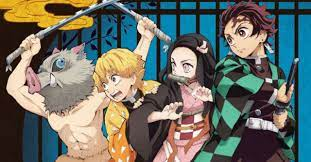
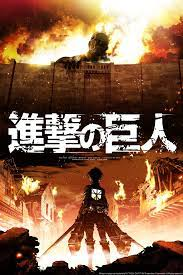
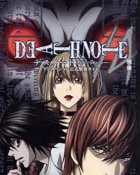

Demon Slayer is a very classic anime in which there is a story about a boy who's family gets killed by a demon and her sister nezuko turns into a half demon somehow so he decides to go on a journey to take revenge of his parents and to find a cure to his sister's problem but why should you watch that welp here are the reasons:- 1. It's storyline is very basic but so interesting that you will get related to the characters somehow and you will feel everything that the character is doing you will feel every emotion. 2.there is such a good character variety and every character has it's own roles and fits perfect. 3.like every shonen it will take you to the roler coaster of emotions. you are gonna watch it right?
Many people have argued about whether or not Attack on Titan should be considered a Shonen anime or not, but the fact is that it was originally published in a shonen magazine and contains several elements of the genre. It is one of the most popular anime series of all time. The story is about survivors trying to survive in a world where man-eating Titans exist. The story begins with the Shiganshina district being devastated by a Titan attack after one of the walls is toppled, and grows from there. i am sure you will watch it!!
Masashi Kishimoto’s story of a young ninja rejected by his city working to one day become the leader of his village(hokage) captured the imagination of every kid and teenager who grew up in the 2000s. just watch it bruh!!!
One piece a great masterpiece made my echiro oda is a story about a boy named luffy who wishes to become pirate king by travelling all across the world and find the great tressure one piece left by the previous pirate king gol D roger and he continues his adventure with his nakama(friends) and make many more friends and foes,it's fun watch it!!
If you were given a notebook that could kill anyone in the world the moment you wrote their name in, what would you write in it? Trick question, we hope it’s no one and you would just throw the book into the trash, but that’s what Death Note’s premise is all about. The story follows Light Yagami, a teen genius who stumbles across a mysterious otherworldly notebook: the “Death Note”, which belonged to the Shinigami Ryuk and grants the user the supernatural ability to kill anyone whose name is written in its pages. A thriller/action-based story, the series centers around Light’s subsequent attempts to use the Death Note to carry out a worldwide massacre of individuals whom he deems morally unworthy of life to change the world into a utopian society without crime, using the alias of a god-like vigilante named “Kira” and the subsequent efforts of an elite task-force of law enforcement officers, consisting of members of the Japanese police force, led by L, an enigmatic internationally detective whose past is shrouded in mystery, to apprehend him and end his reign of terror. As short as the series may be, consisting of only 37 episodes, Death Note takes the spot of the best anime due to its hard-hitting action, fast-paced storyline, and an anime that doesn’t expand into other spin-offs to stay true to its main plot (we’re not going to discuss Netflix’s live-action adaptation), making it a one-of-a-kind anime on our list. If you’re on the hunt for something that you’d want to binge-watch within a weekend, Death Note is the perfect series to give a shot at, since it’ll make you want more and more afterwards. JUST DO IT BEFORE YOU DIE!!!
